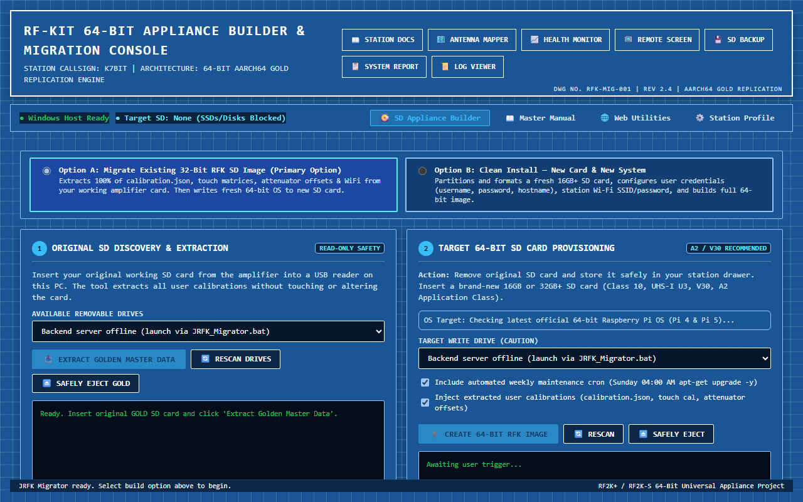

JRFK Standalone Migrator
Single 166MB Windows executable with elevation launcher, format prompt suppressor, and Drive Guard.
7-Screen Operational Web Cockpit
Runs on port 8088 for RF metering, CAT band switching, 53.5V DC rail telemetry, and antenna matrix.
3-Minute Disaster Recovery
Pre-cloned standby SD media strategy delivers instant sub-3-minute recovery during contested operation.
Master Engineering Library
Local port 8088 docs portal featuring K7BIT's authentic 193-page B26 cookbook and schematics.
Station Operating Note (K7BIT)
73 from K7BIT—engineering reliable, high-power amateur radio stations for modern contest and DX operations.

FIG 20: JRFK.EXE MIGRATOR SUITE - WINDOWS STANDALONE EXECUTABLE

FIG 21: JRFK 8088 MASTER WEB SUITE - 64-BIT CONTROLLER PLATFORM